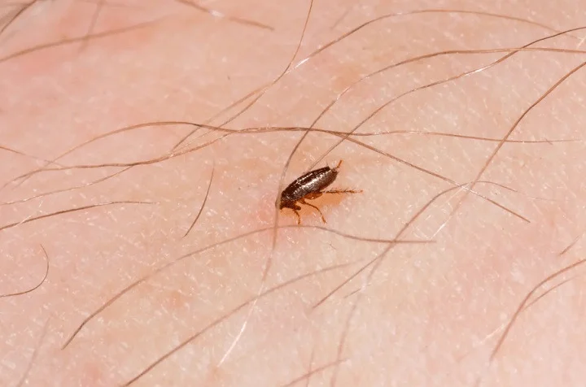

Société de traitement puces Casablanca
Société de traitement puces Casablanca
Société de traitement puces Casablanca, Il existe 3 principales espèces de puces au Maroc qui sont la puce du chien, la puce du chat et la puce de l'oiseau.
Les termes puce de parquet, puce de plancher ou encore puce de bois font souvent référence à la puce du chat ou du chien et ne sont pas des espèces distinctes. Cette appellation vient du fait que les puces se logent parfois entre les lattes du parquet.
La puce de lit n'est pas une espèce de puce, son nom latin est Cimex lectularius ou punaise de lit, souvent appelée à tort, puce de lit.
Enfin, la puce de l'homme, espèce à part entière, est devenue très rare en Europe centrale. Les puces de chiens, de chats et d'oiseaux peuvent très bien s'attaquer à l'homme si elles ont faim.
Les puces sont un problème courant dans les maisons, en particulier dans celles où il y a des animaux domestiques. Vous pouvez trouver des puces chez vous, même si vous n'avez pas d'animaux, par exemple si les précédents propriétaires avaient des chats ou des chiens.
On trouve également des puces sur d'autres animaux, surtout les animaux à poils comme les lapins, les renards, les rats, les souris et le bétail comme les porcs.
Si vous avez besoin d'aide pour vous débarrasser des puces, appelez WINBEST DÉRATISATION dès aujourd'hui au +212 615 599 092.
1. Contact
Appelez-nous afin que nous puissions vous mettre en contact avec votre technicien local.
– Des techniciens près de chez vous
– Un retour rapide
2. Inspection
Votre technicien sera à l'écoute de vos problèmes de nuisibles afin d'arranger une inspection si nécessaire.
– Un rendez-vous selon vos disponibilités
– Des solutions sur-mesure pour votre problème de nuisibles
– Des techniciens certifiés CEPA
– Un devis vous sera remis
3. Traitement
Nos techniciens certifiés appliqueront le traitement adapté
– Un rendez-vous selon vos disponibilités, pas les nôtre
– Une approche respectueuse de l'environnement
– La sécurité de vos enfants et de vos animaux de compagnie avant tout
4. Suivi
Nous vous accompagnerons tout au long de la prestation.
– Des solutions garanties
– Nos conseils de prévention

Société de traitement des nuisibles – puces
Pourquoi se débarrasser des puces ?
Société de traitement puces Casablanca, généralement bénigne, leur piqûre peut cependant causer de fortes démangeaisons chez l'animal et l'homme, et dans des cas un peu plus rares, des réactions allergiques chez certaines personnes. Pour vos animaux de compagnie, ne pensez pas qu'un traitement chez le vétérinaire suffit: lorsque des puces s'attaquent à votre chien ou à votre chat, il y a de très fortes chances qu'elles aient déjà pondus des œufs un peu partout chez vous ! Ces œufs mettent souvent des semaines avant d'éclore;
vous ne verrez pas d'infestation immédiate mais elle sera bien là. Il est donc important de traiter les puces au plus vite afin que le cycle de reproduction se répète au fil des générations et de ce fait, d'éviter de créer une infestation de puces de plus grande ampleur chez vous. Au-delà des démangeaisons et autres gênes, bien qu'elles en soient entièrement capables, il est rare au Maroc de voir des puces transmettre des maladies, mais mieux vaut prévenir que guérir.
vous ne verrez pas d'infestation immédiate mais elle sera bien là. Il est donc important de traiter les puces au plus vite afin que le cycle de reproduction se répète au fil des générations et de ce fait, d'éviter de créer une infestation de puces de plus grande ampleur chez vous. Au-delà des démangeaisons et autres gênes, bien qu'elles en soient entièrement capables, il est rare au Maroc de voir des puces transmettre des maladies, mais mieux vaut prévenir que guérir.
Protection de votre maison et de votre famille contre les puces
Les puces sont un problème fréquent dans les maisons, particulièrement s'il y a des chats ou des chiens. On est souvent confronté à ce problème lorsqu'on déménage dans une maison auparavant habitée par une famille avec des animaux domestiques. Les puces peuvent transmettre des maladies, mais cela n'arrive pas souvent dans nos régions. Le principal problème est plutôt la gêne que causent les piqûres de puces aux personnes et aux animaux domestiques.
Traitements anti puce pour les entreprises à Casablanca
Vous êtes propriétaire d'une exploitation agricole qui élève des animaux, des volailles, des oiseaux, ou vous êtes propriétaire d'un chenil ? Les puces et les tiques peuvent avoir de graves conséquences sur votre activité et sur la santé des animaux dont vous avez la responsabilité.
Solutions antipuce WINBEST DÉRATISATION
En appelant WINBEST DÉRATISATION rapidement pour traiter votre problème de puce, ou de tique, vous êtes certains qu'il sera traité en profondeur, en toute sécurité et pour longtemps. Après tout, la dernière chose que vous voulez, c'est d'être à nouveau confronté à une infestation de puces. L'efficacité de nos traitements anti puce repose sur 3 points clés : Des techniciens qualifiés qui connaissent les différents types de puces et les problèmes qui y sont associés. Des solutions discrètes et adaptées et des conseils, pour que votre problème de puces soit réglé sans gêner vos activités. L'utilisation de produits anti puce en sprays professionnels ou de notre traitement thermique Entotherm®, sans produit chimique et efficace en un seul traitement.
Pour un traitement rapide, efficace et adapté, appelez WINBEST DERATISATION au +212 615 599 092 pour convenir d'un rendez-vous. Découvrez les signes d'une infestation de puces. Pour en savoir plus sur les puces et les problèmes qu'elles peuvent entraîner. Le saviez-vous ? Les puces peuvent faire des bonds d'une hauteur pouvant atteindre 150 fois leur taille. C'est l'équivalent d'une personne faisant un bond d'environ 300 mètres.
Plan anti puces en cinq étapes WINBEST DÉRATISATION
Votre expert local WINBEST DÉRATISATION conviendra avec vous d'une heure pour une inspection complète et approfondie de vos locaux. Il vous recommandera un traitement en fonction du niveau d'infestation et établira un devis détaillé. Une fois que vous aurez approuvé le prix, votre expert dédié organisera les dates et heures de visite d'un technicien pour résoudre votre problème de puces. En fonction du traitement recommandé, plusieurs visites pourront être nécessaires. Lors de la première visite et avant de commencer, le technicien vous expliquera en détail le traitement et son mode opératoire.
Nous vous donnerons aussi des conseils afin que votre problème de puces n'apparaisse plus.Apprendre à reconnaître les puces
Apparence
Il existe de nombreuses espèces de puces, mais la plupart mesurent 2 à 3 mm de long et sont de couleur rouge ou brune. Les puces adultes transpercent la peau des mammifères ou des oiseaux pour se nourrir de leur sang, mais les larves de puces se nourrissent de matière organique dans les tapis ou les lits; par conséquent, une bonne hygiène peut ralentir leur cycle de vie. Les cocons de puces peuvent demeurer dormants pendant deux ans, et être éveillés par des vibrations. Il est très fréquent qu'une infestation de puces demeure dormante dans une maison vide, mais soit éveillée par l'arrivée d'habitants.
Cycle de vie
Puce de l'homme – Les puces de l'homme ont évolué pour se spécialiser dans différents animaux, mais la puce de l'homme vivant sur les gens (et certains animaux possédant une peau similaire) est rare dans nos régions. Exception: dans les alentours des exploitations agricoles, où les puces de l'homme peuvent vivre sur les porcs et être transmises aux humains. Les puces de l'homme piquent n'importe où sur le corps, et sont associées à des irritations lorsque les puces se déplacent sur la peau.
Puce de l'animal domestique – Les puces de l'animal domestique piquent les êtres humains, mais ne vivent pas sur leur corps. Elles piquent les mains et le corps lorsque vous soignez vos animaux domestiques ou lorsque vous nettoyez leur panier, mais le plus souvent, elles piquent les pieds et le bas des jambes. On trouve souvent plus de puces vivant dans les tapis et les paniers d'animaux domestiques que sur les animaux mêmes et elles sautent et piquent lorsque l'on s'en approche.
Habitudes
Société de traitement puces Casablanca, Les piqûres de puces sont marquées d'une minuscule tâche sombre, entourée d'une zone rouge, mais le gonflement est moins prononcé qu'avec les autres piqûres d'insectes. Une seule puce pique souvent deux à trois fois dans la même zone, pour y chercher du sang. Souvent, on sent la piqûre de puce immédiatement, mais elle ne fait pas vraiment mal. C'est l'irritation qui résulte de la réaction du corps qui cause la gêne. Veuillez vous reporter aux pages sur le traitement des insectes piqueurs pour de plus amples renseignements. Les enfants risquent davantage d'être piqués par des puces, surtout lorsqu'ils jouent par terre. Ils ont aussi tendance à être plus sensibles aux piqûres de puces que les adultes. Certaines personnes développent une allergie après plusieurs piqûres de puces. Cette allergie se manifeste par une éruption cutanée ou un eczéma. Le cas échéant, consultez un pharmacien ou un médecin qui vous conseillera un traitement. Les puces sont pénibles pour les humains, mais les animaux domestiques sont souvent encore plus affectés par les piqûres de puces.
Protection des animaux domestiques contre les puces
Même les meilleurs soins ne peuvent pas tout à fait exclure le risque pour votre chien ou chat d'attraper des puces.
Si votre animal domestique a des puces, il se grattera plus souvent, ou il cherchera à mordre les puces dans son pelage. Un peigne antipuces et un toilettage régulier sont parfois suffisants pour éviter une infestation de puces, mais votre vétérinaire vous conseillera probablement de prendre des mesures proactives afin de protéger votre animal domestique contre les puces. Consultez votre vétérinaire si vous découvrez des signes d'irritation, comme une rougeur de la peau, ou de fines tâches sur le pelage de votre animal.